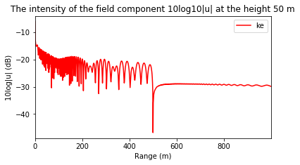

Single knife-edge diffraction¶
[1]:
import os
os.chdir('../../../')
from rwp.kediffraction import *
from rwp.antennas import *
from rwp.environment import *
from rwp.vis import *
Preparing environment
[2]:
env = Troposphere(flat=True)
env.z_max = 150
env.knife_edges = [KnifeEdge(range=500, height=50)]
antenna = Source(wavelength=1, height_m=50)
Starting calculation
[3]:
kdc = KnifeEdgeDiffractionCalculator(src=antenna, env=env, max_range_m=1000)
field = kdc.calculate()
Visualising results
[4]:
vis = FieldVisualiser(field, trans_func=lambda v: 10 * cm.log10(1e-16 + abs(v)), label='ke')
plt = vis.plot2d(min=-40, max=0)
plt.title('The intensity of the field component 10log10|u|')
plt.xlabel('Range (m)')
plt.ylabel('Height (m)')
plt.show()
plt = vis.plot_hor(50)
plt.title('The intensity of the field component 10log10|u| at the height 50 m')
plt.xlabel('Range (m)')
plt.ylabel('10log|u| (dB)')
plt.show()


[ ]: